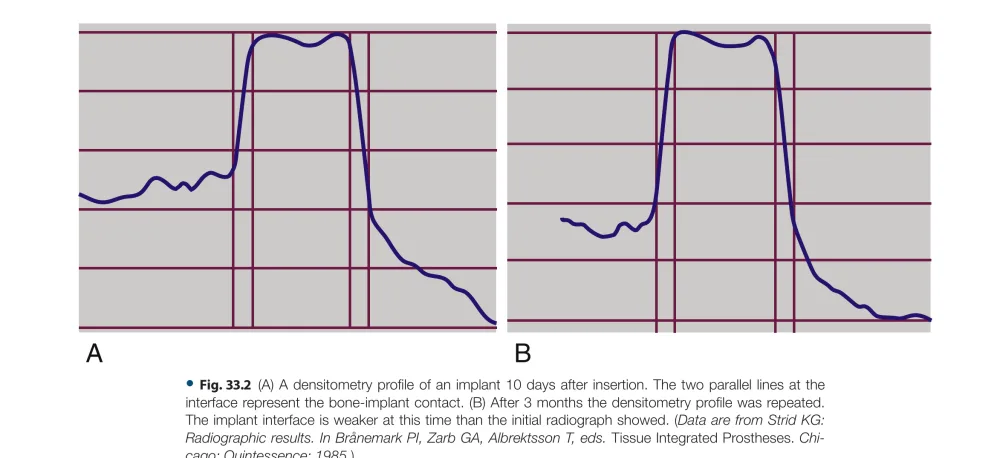
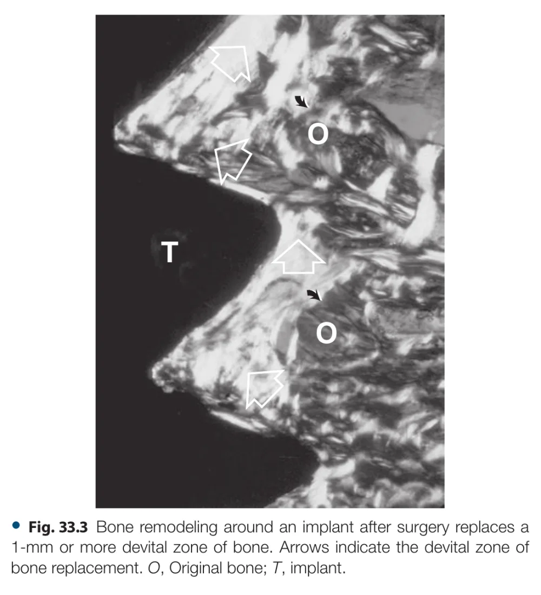
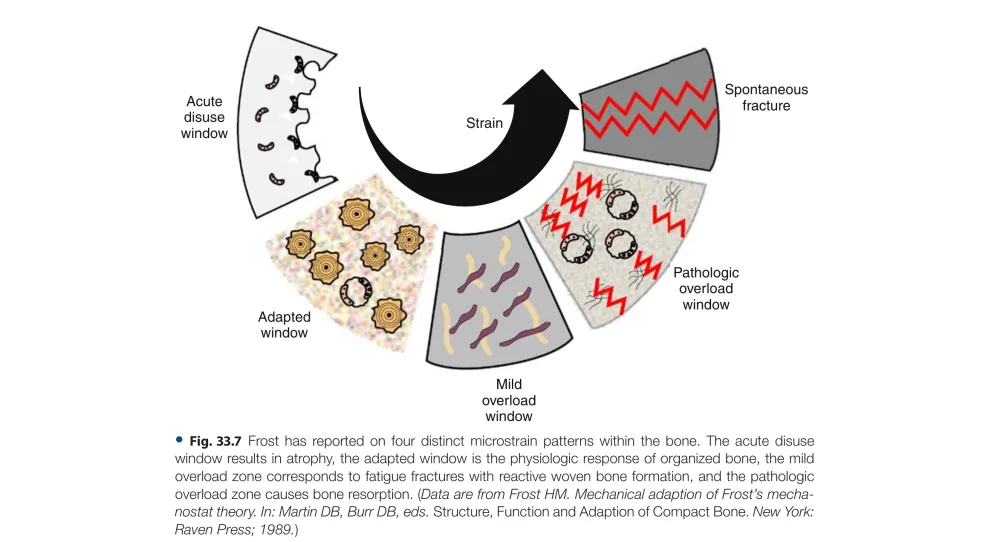
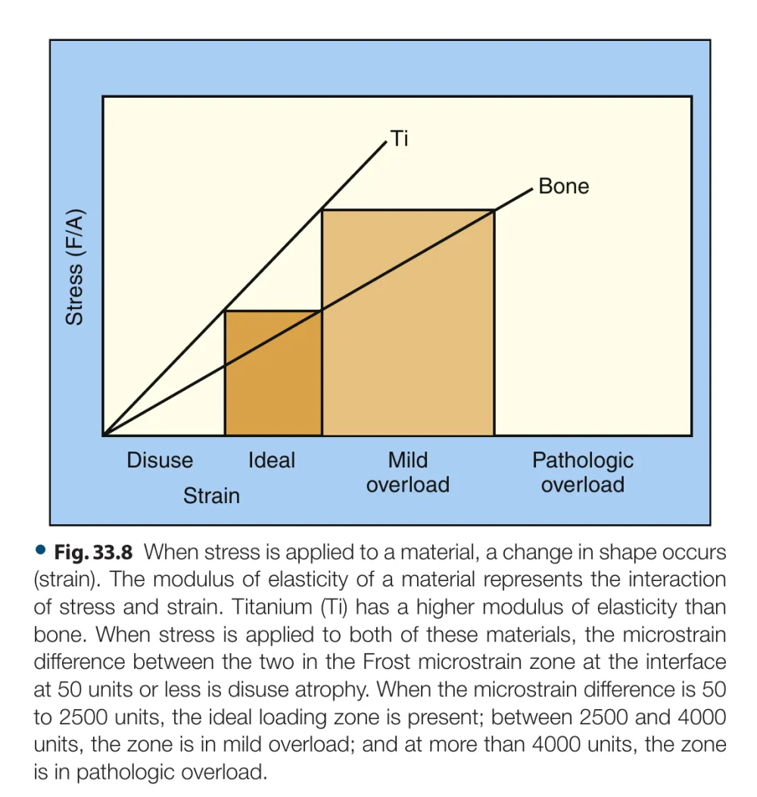

نسخه استخراجشده؛ ترجمه یا تأیید علمی انجام نشده است. وضعیت: captured
این درس یک جمله دارد که بیشتر شهود بالینی را وارونه میکند:
«در واقعیت، رابط استخوان در روزِ قرار دادن ایمپلنت قویتر از سه ماه بعد است.»
چرا؟ فرایند جراحی آمادهسازی استئوتومی و قرار دادن ایمپلنت، یک پدیدهی شتابدهندهی ناحیهای (regional acceleratory phenomenon) از ترمیم استخوان را در اطراف رابط راه میاندازد. در نتیجهی جراحی، استخوان لاملار سازمانیافته و بهشدت مینرالیزهی کنار محل ایمپلنت به استخوان بافته (woven) نامنظم و کممینرال تبدیل میشود.
و از اینجا پنجرهی خطر ساخته میشود:
«رابط استخوان-ایمپلنت در ۳ تا ۶ هفته پس از قرار دادن جراحی، ضعیفترین و بیشترین ریسک اورلود را دارد» — چون تروما ریمادلینگی را در رابط راه انداخته که در همین بازه کمترین مینرالیزاسیون و بینظمترین ساختار را دارد.
و دادهی بالینی دقیقاً همین را تأیید میکند: در یک گزارش بالینی، شکست ایمپلنتهای بارگذاریشدهی فوری عمدتاً بین هفتهی ۳ تا ۵ پس از قرار دادن رخ داده — بهصورت لقی، بدون عفونت.
و در ماه چهارم؟ استخوان هنوز فقط ۶۰ درصد لاملار مینرالیزه و سازمانیافته است. با وجود این، همین مقدار در بیشتر انواع استخوان و موقعیتهای بالینی برای ترمیم دومرحلهای و بارگذاری تأخیری کافی بوده است.
پس راهبرد چیست؟ یک روش برای کاهش ریسک اورلود اکلوزالی فوری، کاهش ترومای جراحی و مقدار ریمادلینگ اولیه در زمان قرار دادن است.
ترومای جراحی از کجا میآید و چه میکند:
و یک اشتباه رایج: ایمپلنت باید در زمان قرار دادن غیرمتحرک باشد — اما نکروز فشاری ناشی از تورک بیش از حد میتواند ریسک میکروداماژ در رابط را بالا ببرد و به تحلیل استخوان بینجامد. تورک بیش از حد، کرنش بیشتری در رابط ایجاد میکند، ریمادلینگ بیشتری راه میاندازد و قدرت رابط استخوان-ایمپلنت را کم میکند. یعنی «هرچه سفتتر، بهتر» نادرست است.
لاملار در برابر بافته — چرا این تمایز همهچیز است:
و سرعت ساختشان زمین تا آسمان فرق دارد: استخوان بافته با نرخ ۶۰ میکرومتر در روز شکل میگیرد، در حالی که استخوان لاملار ۱ تا ۵ میکرومتر در روز.
و اینجا منطق پروتکل دومرحلهای روشن میشود: رویکرد کلاسیک دومرحلهای اجازه میداد ترمیم جراحی از پاسخ به بار زودهنگام با ۳ تا ۶ ماه فاصله جدا شود — تا بیشتر استخوان بافتهای که برای ترمیم تروما ساخته شده بود، جای خود را به لاملار بدهد. منطق بارگذاری فوری این است: نهتنها ریسک تشکیل بافت فیبروزی (که شکست بالینی است) کم شود، بلکه تشکیل استخوان بافته به حداقل برسد و بلوغ استخوان لاملار برای تحمل بار اکلوزالی پیش برود.
و مفهومی که بدون آن این یونیت ناقص است — نرخ ریمادلینگ رابط:
تعریفش چنین است: «مدت زمانی که طول میکشد تا استخوانِ رابطِ ایمپلنت با استخوان جدید جایگزین شود.»
و نکتهی کلیدی این است: «هنگامی که استخوان توسط پروتز ایمپلنت بار میگیرد، رابط دوباره شروع به ریمادل شدن میکند. اما این بار، ماشهی این فرایند کرنش است، نه ترومای جایگذاری ایمپلنت.» — یعنی رابط دو بار ریمادل میشود، با دو علت کاملاً متفاوت. اولی را جراح کنترل میکند و دومی را پروتز.
و تعریف دقیق کرنش: «تغییر طول یک ماده تقسیم بر طول اولیهی آن» — و بهصورت درصد تغییر اندازهگیری میشود.
و مرز شکست: وقتی ترومای جراحی بیش از حد بزرگ باشد یا تنش مکانیکی بیش از حد شدید، بهجای استخوان، بافت فیبروزی تشکیل میشود. و بافت فیبروزی در رابط ایمپلنت معمولاً به لقی بالینی میانجامد، نه فیکساسیون سخت. به یاد بیاور که شکستهای هفتهی ۳ تا ۵ دقیقاً بهصورت لقی بدون عفونت بودند — همین سازوکار.
و یک تفکیک واژگانی ظریف: استخوان بافتهی ناشی از ترومای جراحی «استخوان ترمیمی (repair bone)» نامیده شده، و استخوان بافتهای که از پاسخ مکانیکی ساخته میشود «استخوان بافتهی واکنشی (reactive woven bone)».


وقتی به استخوان بار وارد میشود، شکلش تغییر میکند. این تغییر را کرنش (strain) میسنجیم. و نکتهی کلیدی: شرایط ریزکرنش (microstrain) در حدی ۱۰۰ برابر کمتر از استحکام نهایی استخوان میتواند یک پاسخ سلولی را راه بیندازد.
بر همین اساس یک زبان ریزکرنش برای استخوان ساخته شده است (پنجرههای فراست)، بر پایهی پاسخ زیستی آن در سطوح مختلف.
نقطهی مرجع: استخوان در ۱۰٬۰۰۰ تا ۲۰٬۰۰۰ میکرواسترین (یعنی ۱ تا ۲ درصد کرنش) میشکند.
و چهار پنجره:
نکتهای که اغلب از قلم میافتد: در اورلود خفیف، منشأ تروما دیگر جراحی نیست — خودِ ریزکرنش تروما را میسازد. اما نتیجه یکی است: در هر دو حالت استخوان کممینرالتر، بینظمتر، ضعیفتر و با مدول الاستیسیتهی پایینتر است. یعنی جراح میتواند تروما را کم کند، ولی اگر پروتز اورلود کند، همان آسیب از راه دیگری ساخته میشود.
حالا معادلهی مرکزی:
وقتی کرنش را روی محور افقی و تنش را روی محور عمودی بگذاری، رابطهی این دو شاخص مکانیکی، انعطافپذیری یا مدول الاستیسیتهی ماده را میدهد. مدول یعنی مقدار تغییر شکل (کرنش) در ازای یک سطح بار (تنش) مشخص.
و از اینجا کل راهبرد درمانی بیرون میآید: «هرچه تنش واردشده به استخوان کمتر باشد — یعنی نیرو تقسیم بر سطح عملکردیای که بار را دریافت میکند — ریزکرنش در استخوان کمتر است.» پس یک روش برای کاهش ریزکرنش و نرخ ریمادلینگ، فراهم کردن شرایطی است که سطح عملکردی رابط استخوان-ایمپلنت را افزایش دهد.
و حالا هر دو سوی کسر را باز کنیم:
و آخرین قطعه — عدمتطابق مدول با تراکم استخوان تغییر میکند:
مدول الاستیسیته به کیفیت استخوان مربوط است: هرچه استخوان کمتراکمتر، مدول پایینتر. مقدار BIC هم در استخوان کمتراکمتر کمتر است. و استحکام استخوان مستقیماً به تراکمش مربوط است — هرچه استخوان نرمتر، ترابکولها ضعیفتر.
و پیامد بالینیاش: عدمتطابق ریزکرنش بین تیتانیوم و استخوان D4 بزرگتر از عدمتطابق بین تیتانیوم و استخوان D1 است — حتی اگر مقدار تنش یکسان باشد. یعنی همان پروتز، همان نیرو، ولی در D4 استخوان بیشتر وارد ناحیهی اورلود میشود. این توضیح میدهد چرا D4 از فهرست پیشنیازهای درس ۲ بیرون بود.
و یک نکتهی ظریف دربارهی کورتیکال: نرخ ریمادلینگ استخوان کورتیکال کندتر از ترابکولار است. به همین دلیل کورتیکال در فرایند بارگذاری فوری احتمال بیشتری دارد که لاملار بماند. و از همینجا توصیهی بالینی میآید: ایمپلنتهای روتفرم قدامی، هنگام بارگذاری فوری، باید بکوشند کورتکس مقابل را درگیر کنند — هم شرایط بیومکانیکی بهتر کورتیکال و هم سطح تماس افزوده.
و چرا در خلف این ترفند کار نمیکند: در نواحی خلفی، سینوس ماگزیلاری و کانال مندیبولار معمولاً درگیری اپیکالی کورتکس مقابل را منتفی میکنند — و در ماگزیلا آن کورتکس بههرحال نازک است. کورتیکال کرستالی ماگزیلا هم نسبت به همتای مندیبولارش نازک است.

